Introducción
En toda empresa de producción manufacturera es necesario definir los métodos y los recursos necesarios para realizar las inspecciones utilizando la técnica de muestreo, sea inspeccionando variables o atributos de las prendas, teniendo en cuenta el contexto de la empresa, sus propias normas y las normas técnicas aplicables a la industria de la confección de acuerdo con su línea de producto y el sistema de producción.
Con respecto al sistema de producción de la empresa se debe conocer de acuerdo con la metodología que promueve la manufactura esbelta, otras técnicas aplicables y así generar la cultura de mejora basada en las personas, enfocándose en eliminar los desperdicios o mudas del proceso productivo, es decir, lo que no agrega valor al cliente.
Es por esto que surge la necesidad de establecer un procedimiento examinando las diferentes técnicas asociadas de la filosofía Lean manufacturing aplicadas, pues su combinación se relaciona directamente con la calidad de la empresa, en esta oportunidad se mencionan Jidoka, Heijunka, Kanban, Control visual y Just in Time (JIT).
1. Procedimientos de inspecciones de calidad
El método para desarrollar las actividades de inspección de productos de las empresas de confecciones puede realizarse mediante la observación o con la ayuda de la tecnología, haciendo el procedimiento de inspección, semi o automatizado completamente; pero la labor del inspector no es reemplazada al analizar y hallar las soluciones en los errores y problemas presentados.
Es necesario determinar procedimientos en una empresa, porque organiza las actividades obteniendo mejor eficiencia y optimizando los recursos. Teniendo en cuenta lo anterior, es necesario establecer los procedimientos de las inspecciones para asegurar el excelente desempeño de las actividades de calidad de la empresa.
Conforme a la optimización de los recursos, utilizar el muestreo en la inspección aumenta la eficiencia de la actividad de inspección, combinada con la utilización de las técnicas de manufactura esbelta.
1.1. Procedimiento de inspección de calidad con muestreo según normatividad
Con el fin de seguir los lineamientos establecidos en las normas técnicas de calidad como en la normatividad de la empresa, se presenta el procedimiento de la inspección utilizando el muestreo con el fin de estandarizar los procesos, además de tener en cuenta las normas técnicas asociadas para dar soporte a la toma de decisiones al momento de inspeccionar un producto.
Es necesario recalcar la elección del tamaño de la muestra, el cual es de especial atención, porque debe garantizar la representación del lote, pues una muestra pequeña puede ser insuficiente para aceptar o rechazar un lote o una muestra grande dificulta la eficacia de la medición.
Para elegir el tamaño de la muestra es necesario tener en cuenta el plazo de entrega de la producción, la duración de la inspección, la disponibilidad de los productos y los costos unitarios del producto.
Antes de examinar el producto hay que considerar que el procedimiento tiene en cuenta técnicas de Manufactura Esbelta que apoyan la gestión de calidad de una planta, como son: Heijunka, Control visual, Kanban, Just in Time (JIT) o Justo a Tiempo, Jidoka, entre otras y las cuales ayudan al control de la variabilidad de los procesos.
Heijunka
Es la técnica para planificar y nivelar los pedidos teniendo en cuenta la cantidad y la variedad de productos de cada pedido. Es necesario conocer la demanda, aplicar la estandarización del producto y el proceso con el fin de establecer el manejo de lotes pequeños o utilizar un lote único para mantener una producción continua y nivelada.
Para aplicar esta técnica se utilizan células de trabajo las cuales le caracterizan por ser flexibles, las cuales se unen para obtener una célula de trabajo conjunta en donde los procesos van coordinados para conseguir el producto planificado.
Las celulas o módulos de producción son pequeñas empresas dentro de la planta, las cuales se crean teniendo en cuenta lo siguiente:
Identificar familias de productos, por ejemplo, módulos de pantalón o de camiseta.
Contar con personal polivalente.
Disponer de personal de apoyo flexible, proactivo y que aporte ideas para el montaje de los módulos o celdas nuevas.
Diseñar sistemas “anti-error” en cada estación o puesto de trabajo del módulo.
Un sistema de producción que adopta la implementación de células de producción permite mejorar la eficiencia porque:
Mejora el cumplimiento de los requisitos de calidad y de tiempo establecidos por el cliente.
Reduce el inventario en proceso al manejar pequeños lotes para el flujo continuo entre puestos de trabajo.
Optimiza el espacio de la planta al reducir la distancia entre los puestos de trabajo.
Reduce el transporte al disminuir el espacio entre las máquinas y la organización del proceso.
Mejora el uso de la maquinaria y equipos por la mejore en la planificación y el flujo de los procesos.
Una de las herramientas utilizadas son los balanceos de línea en hojas de cálculo o programas especiales. Para la distribución de cargas de trabajo, se tiene en cuenta además de la eficiencia del coequipero, la calidad aportada en la célula de trabajo con el fin de mejorar en conjunto desempeño y calidad.
Control visual
Es el conjunto de técnicas para el control y comunicación visual, su finalidad es facilitar el conocimiento a los empleados, sobre el estado del sistema y los avances de las acciones de mejora. El control visual hace que participe todo el personal, porque al conocer cómo afectan los esfuerzos de su trabajo en los resultados, hace que asuman la responsabilidad y genere compromiso para alcanzar las metas de la empresa.
Esta técnica presenta ventajas como la rápida captación de la información y su fácil difusión, aumenta la motivación del personal, por tener la oportunidad de contribuir y recibir reconocimientos.
Para su aplicación utiliza algunos métodos como:
Tableros de gestión visual, los cuales brindan un contexto de la situación a analizar.
Señales de monitorización de máquinas: Por ejemplo, identificar la necesidad de mantenimiento.
Control estadístico del proceso con la aplicación de las herramientas de calidad, las cuales se publican en lugares visibles de la empresa.
Registro de problemas.
Actividades de mejora.
Identificación de defectos y reprocesos.
Recomendaciones de calidad.
Kanban
Es un sistema de programación y control que sincroniza la producción basándose en el uso de tarjetas, consiste en colocar las tarjetas en cada contenedor de los materiales o piezas que describe su cantidad, cada proceso a medida de su sincronización va retirando los materiales que requiera, para llegar a su ensamble final; es una herramienta que asegura alta calidad y la producción en el tiempo adecuado.
Además, se pueden utilizar las tarjetas en los tableros, llamados “tableros Kanban”, en los cuales se visualiza de manera fácil el flujo de trabajo pues se organizan las actividades de producción, facilitando el seguimiento de los avances de cada proceso y la respuesta de las personas responsables, tal como se observa en la figura.
Las tarjetas Kanban son un mecanismo de comunicación de las órdenes de producción entre los diferentes puestos de trabajo, en las tarjetas se puede incluir su nombre, código de pieza, el lugar donde se fabricará, cantidad de piezas a producir, el lugar donde se almacenarán las prendas terminadas.
En la siguiente figura se observa un ejemplo de la tarjeta:
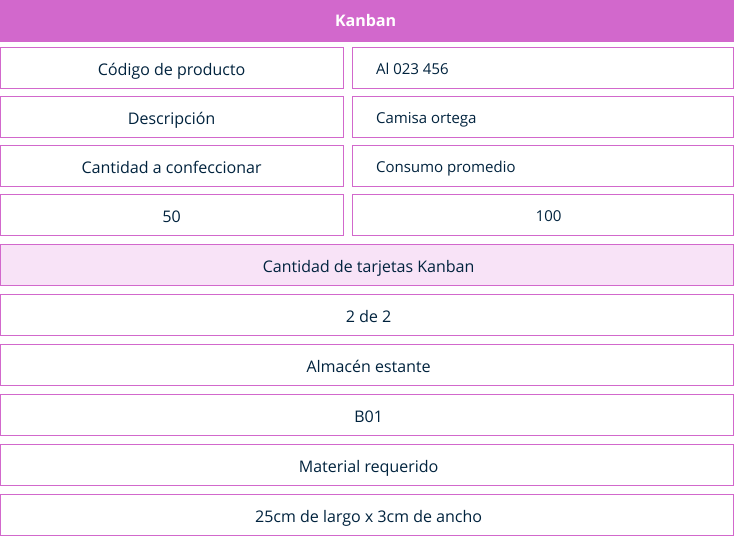Existen dos tipos de Kanban, el de producción que indica o autoriza qué y cuánto se debe confeccionar en el proceso posterior; y el de transporte que indica o autoriza qué y cuánto material se retira del proceso anterior.
La finalidad del uso de estas tarjetas es conseguir un reaprovisionamiento del material vendido sin generar stocks innecesarios y por tanto disminuir desperdicio de inventario.
Justo a Tiempo (JIT)
Su filosofía consiste en producir según las necesidades del cliente en cuanto al tiempo y la cantidad eliminando los desperdicios relacionados en la línea de producción.
El método justo a tiempo se caracteriza por producir al ritmo del Tack Time, trabajar de manera estandarizada y utilizar el flujo de una pieza para detectar de manera temprana los errores y no en la inspección por muestreo.
Takt time:
Conocido como los latidos del negocio, se calcula para sincronizar el ritmo de lo que se produce y lo que se vende, con el fin de cumplir al cliente, este es una de las quejas recurrentes del sector de confecciones, relacionado con el manejo del tiempo en las plantas de producción.
El Takt Time, es la frecuencia con la que se fabrica una pieza o producto en función del ritmo de las ventas con el fin de satisfacer las necesidades del cliente. Es importante hacer la diferencia con el tiempo de ciclo porque el takt time es determinado por el cliente y el tiempo de ciclo es definido por la empresa. Es por lo anterior que las empresas deben tener un tiempo de ciclo menor al takt time, de allí el problema de incumplimiento de los pedidos y las necesidades de horas y turnos extras en las empresas sobre todo en lo que se llama la temporada alta del año.
En el siguiente ejemplo se puede observar el cálculo del takt time:
Una empresa de confección de pijamas tiene un pedido de 1000 unidades para entregar en 12 horas.
En primer lugar se convierten las horas disponibles a segundos (43200 segundos). Luego se aplica la fórmula:
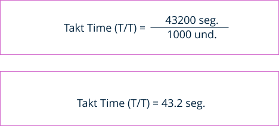Es decir, se debe producir una pijama cada 43,2 segundos.
La metodología del JIT incluye el sistema push and pull:
Sistema de empujar o Push System: el ritmo de los procesos es determinado según un programa maestro de producción en el que las entregas son programadas según pronósticos previos, por tanto, es controlado por información a contracorriente del flujo de producción, es decir, se produce por si acaso, consumos anticipados, lotes grandes, inventarios altos y alto desperdicio.
Sistema de jalar o Pull System: las entregas son autorizadas, es controlado por información en dirección de la corriente del flujo de producción, es decir, según la demanda, por tanto, hay más precisión en la producción con consumos reales, lotes pequeños, inventarios bajos y reducción de desperdicios de los procesos.
Algunos de los beneficios que tiene la aplicación del método JIT son:
Reducción de inventarios hasta un 50%.
Reducción del tiempo del proceso entre el 50% y 70%.
Reducción en cambios de herramientas de 50% al 80% sin grandes inversiones en equipos y maquinaria.
Incremento de la productividad del 20% al 50%.
Trabajo estandarizado
La estandarización es la descripción eficiente del flujo del trabajo en términos de calidad, costo, cantidad y seguridad; combinado de manera efectiva con los recursos de mano de obra, maquina y equipos, insumos, textiles y materiales.
Se utilizan tres instrumentos para los componentes del trabajo estandarizado:
El trabajo estandarizado disminuye los desperdicios, se identifica el trabajo en proceso, ayuda en el cálculo de requerimiento de mano de obra, para atender los pedidos, apoya la administración visual del trabajo en procesos y los defectos que se presenten en ellos. Las herramientas de control estadístico apoyan la estandarización de los procesos, por eso son fundamentales en el desarrollo y aplicación de las metodologías del manufactura esbelta.
Flujo de trabajo
El flujo de productos, materiales e información debe ser continuo, para mantener la calidad de la producción, mejorando la flexibilidad y confiabilidad de los procesos, de esta manera se eliminan los paros y demoras de los productos para entregar al cliente. Suele suceder que cuando se realiza una inspección se detectan de manera tardía los defectos y se hace dispendioso cuantificar las unidades defectuosas, la ubicación de dichas unidades y la causa del defecto.
Con respecto a mejorar el flujo de los procesos, se debe adaptar el flujo de una pieza con el fin de detectar los defectos de manera inmediata, porque se detecta rápidamente los defectos en el lugar que se ocasiona y seguramente en la primera unidad defectuosa.
El flujo continuo se realiza en tres niveles:
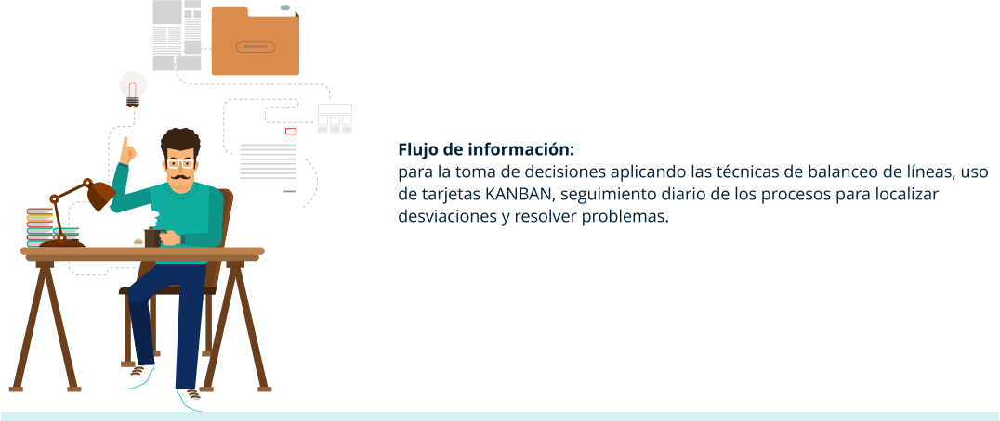Jidōka
Es un término japonés que significa automatización con un toque humano o también llamado autonomación, define un sistema de control autónomo para que los procesos tengan autocontrol de calidad, de allí que cuando se presente un problema de manera automática o manual el proceso se detiene para que no se sigan produciendo piezas defectuosas, y se reanuda una vez se dé solución al problema para producir sin defectos y así se evite pasar al proceso siguiente.
Con el uso de esta técnica se replantea el enfoque de la inspección, porque se centra en la prevención de los defectos y controlar los procesos, produciendo las piezas exactas sin unidades adicionales, disminuyendo los desperdicios de sobreproducción.
La autoridad de parar una línea de producción debe ser otorgada a un coequipero o al inspector con la capacidad de esa toma de decisión, quien pulse el botón de alerta ANDON, indica el problema e informa al equipo.
Una máquina automatizada puede tener un dispositivo que detecta de manera automática piezas defectuosas, se detiene y requiere la intervención humana para analizar, corregir y establecer las demás acciones necesarias.
La aplicación de la técnica funciona de la siguiente manera:
Se detecta el defecto.
Se oprime el botón de alerta ANDON para detener el proceso. Teniendo en cuenta el color de la alerta se actúa en concordancia, cuando el botón es verde la actividad es óptima, cuando el color es amarillo es una alerta en donde se debe realizar alguna corrección en las piezas, el inspector debe coordinar la acción, debido a que el proceso entra en demora, así mismo el responsable de la operación debe comunicar cuando se presente algún problema de manera temprana; y si es luz roja se detiene completamente la línea de producción, en donde todos los integrantes del equipo deben encontrar la solución factible.
En la siguiente tabla se pueden observar las 10 fases para la aplicación de la técnica de Jidōka:
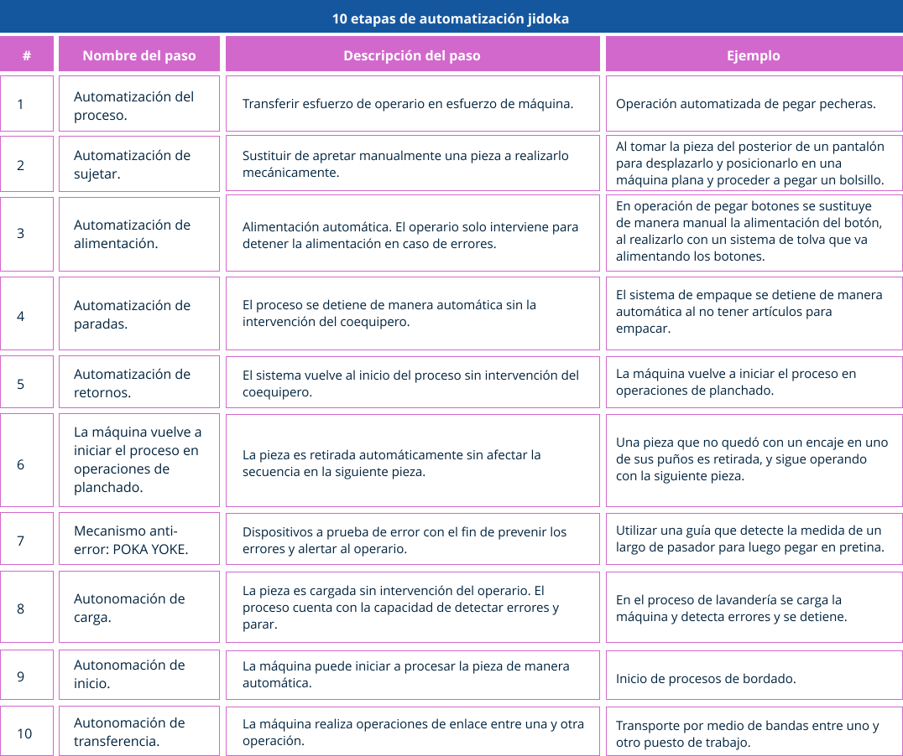Antes de examinar los procedimientos, se tienen en cuenta las diferentes Normas Técnicas Colombianas relacionadas, las cuales se debe aplicar dependiendo de la línea de producto, los insumos, los textiles y se incluyen las normas relacionadas con el control estadístico de calidad.
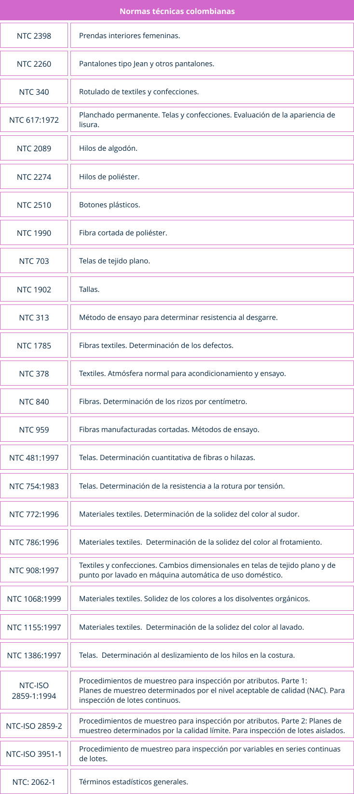Las normas mencionadas en la tabla anterior son algunas con las cuales se tiene en cuenta para definir las características a inspeccionar, y junto con el listado de defectos establecido se concluye cuales son los niveles de aceptación de calidad.
Para la industria de la manufactura de confección se recomienda tener en cuenta los siguientes factores para los puntos de la inspección:
En operaciones en donde se coloquen aditamentos, se ajusten guías.
Realizarla en una operación antes que sea difícil o costosa su corrección.
Mientras se está desarrollando una operación, llamada crítica por su alto costo y dificultad derivada de la precisión requerida.
En puntos acordados por consenso con el equipo de trabajo debido a su desarrollo común en todos los procesos.
En almacenamiento y embalaje
En suministros o almacén de insumos y materiales.
Además, es importante tener en cuenta que en cada proceso el coequipero tiene:
Derecho de esperar material perfecto.
Obligación de inspeccionar el material antes de usarlo.
Obligación de informar los problemas a la operación o procesos anteriores.
Obligación de detener el procesos si es el caso para no seguir, hasta que sea resuelto el problema.
También es necesario realizar la planeación para tener cero defectos, teniendo en cuenta la utilización de cualquier herramienta de calidad en todos los recursos de la empresa como son: mano de obra, materiales, métodos, máquinas e información, la metodología Lean Manufacturing tiene como fin que no se presenten defectos en los productos;
Algunas de las acciones de mejora bajo la metodología Lean Manufacturing se pueden ver en el siguiente gráfico:
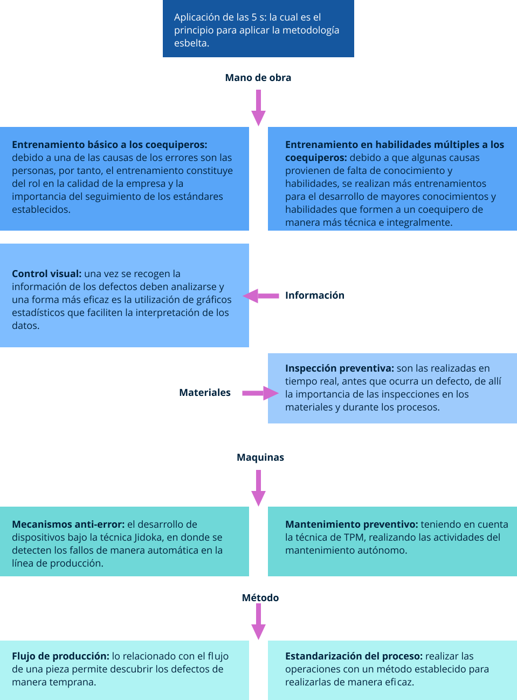Es importante tener clara la diferencia entre el proceso y procedimiento, el cual se puede observar en el siguiente paralelo:
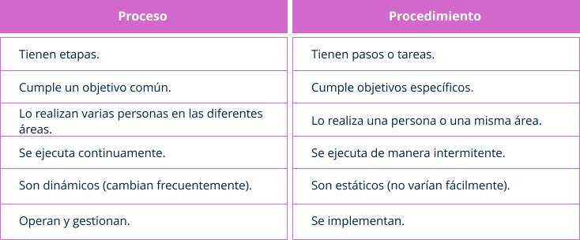1.2. Procedimiento de inspección de calidad con muestreo del lote por variables
En los procesos de inspección las variaciones dan como resultado diferentes medidas de una variable, las cuales tienen una distribución normal o gaussiana, se puede observar en el diagrama en forma de campana o de Gauss.
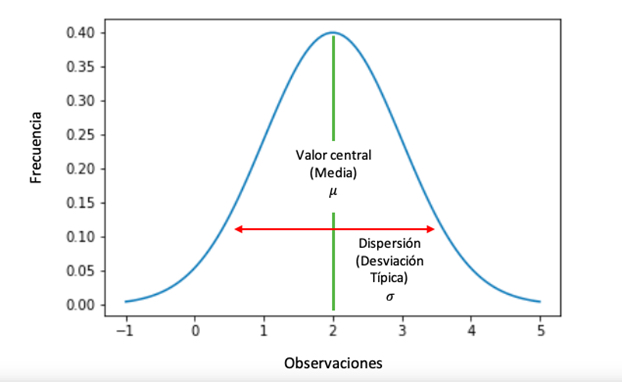Existen dos tipos de variables, las discretas y las continuas. Las variables discretas son aquellas que solo pueden tomar un valor dentro de un mínimo de conjunto numerable, es decir que no acepta cualquier valor, y las variables continuas toman un valor fijo dentro de un intervalo específico. Las diferencias de esas medidas dan como resultado los defectos, los cuales deben ser definidos contemplando el manejo de las tolerancias de dichas características, las cuales se aplican en los gráficos de control como los límites superiores e inferiores.
Se realiza inspección de calidad con muestreo de aceptación por variables cuando:
Se inspecciona una característica con la capacidad de convertirse con una escala medible.
La inspección por atributos resulta más alta en su costo.
Al realizar inspección por atributos no aporta suficiente información de calidad para ser analizada.
Algunos ejemplos de variables a inspeccionar en los productos de confección son:
La medida de un ojal
El largo de una blusa
Cantidad de botones en una camisa
Ancho de una pretina
Medidas de un bolsillo
En el siguiente cuadro pueden observar las ventajas y desventajas de la aplicación del muestreo por variables:
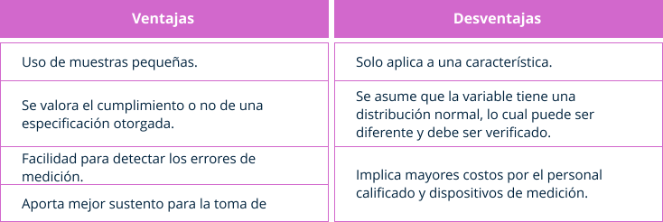Para realizar el procedimiento se debe tener definido:
Los lotes, los cuales están conformados por las unidades de los productos cuyas características deben ser las mismas, lo cual genera homogeneidad y garantiza la evaluación de calidad, así mismo se debe definir su tamaño.
El plan de muestreo teniendo en cuenta la muestra, su tamaño y los criterios de aceptación, así como los programas y sistema de muestreo.
Definir el tipo de inspección a usar según el lote, sea normal, estricta o reducida, además deben describirse las reglas en el caso necesario de los cambios generados por los resultados arrojados por la inspección. Posteriormente realizar la inspección de cada prenda que conforma la muestra.
Definir el Nivel Aceptable de Calidad (NAC), el cual depende del tamaño de la muestra y dependiendo de las características a inspeccionar definidas, puede ser diferente, pero el NAC no puede ser superior a 10%.
Definir el nivel de inspección, si se utilizan los de tipo general: I, II o III, en el caso de muestras pequeñas para ensayos se utilizan: S1, S2, S3 o S4.
Determinar el tipo de plan de muestreo, si es simple, doble o múltiple, los cuales pueden observarse en las tablas 2, 3 y 4 de la Norma ISO 2859-1.
Desarrollar la curva de operación y recolectar los datos del proceso.
Tabular la información recolectada en las tablas de frecuencias, así mismo graficar histograma, gráfico de control entre otras herramientas estadísticas.
Análisis de los datos
Presentación de resultados
1.3. Procedimiento de inspección de calidad con muestreo del lote por atributos
Los atributos no pueden ser representados por una cifra, solo pueden ser inspeccionados de manera visual. Es importante tener definidos los defectos, las cantidades y niveles, para así determinar, cuándo la prenda es rechazada y cuando es aceptada. El procedimiento se desarrolla de manera igual a la inspección realizada por variables.
Es importante asegurar por métodos estadísticos, basados en modelos de probabilidad que el comportamiento de la muestra es igual al lote, en cuyo caso se utilizan las curvas de operación llamadas Curva OP, para tomar decisiones en el lote.
La curva característica de operación OP es la muestra del desempeño potencial del plan de muestreo, es decir su confiabilidad, se puede analizar el riesgo del consumidor y el fabricante mediante el cálculo de la probabilidad de aceptar o rechazar el lote con una calidad establecida. Para calcular la CO se procede de la siguiente manera:
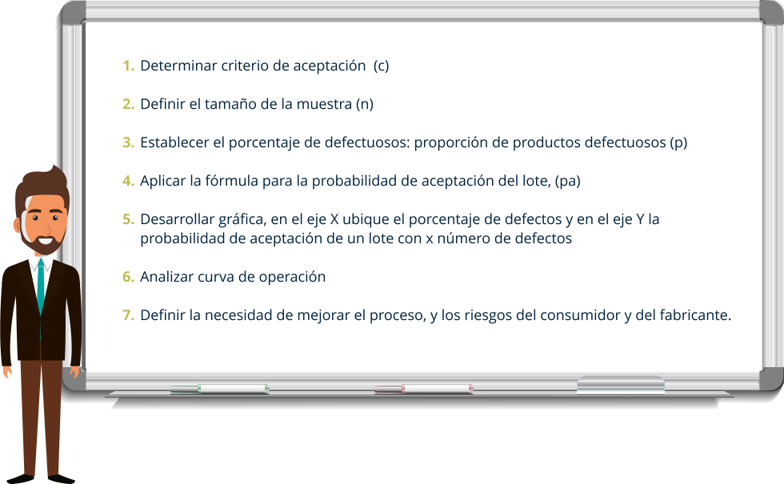En el siguiente gráfico se puede observar el flujograma del procedimiento de inspección por muestreo por atributos utilizando las tablas militares difundidas según la Norma ISO 2859-1, norma basada en la curva de operación:
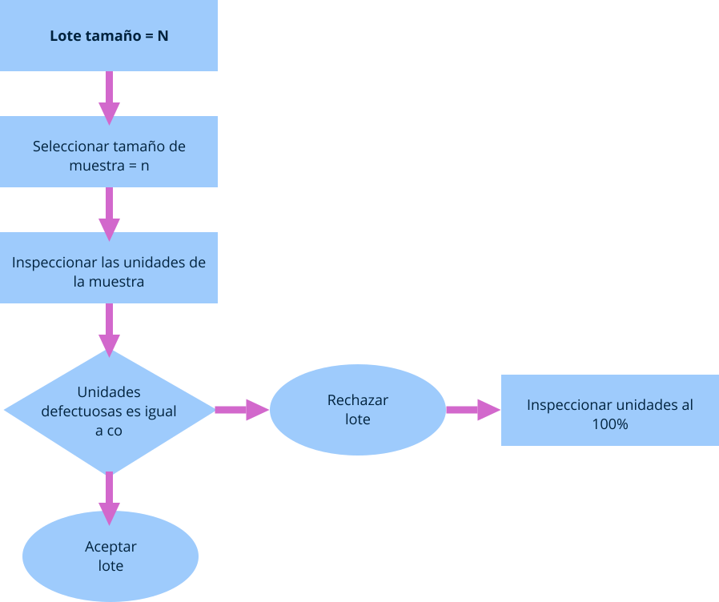La descripción del procedimiento es el siguiente:
Los lotes, conformados por las unidades de los productos cuyas características deben ser las mismas lo cual genera homogeneidad y garantiza la evaluación de calidad. A su vez el tamaños de lotes, definiendo las unidades de los productos del lote.
Definir el plan de muestreo teniendo en cuenta la muestra, su tamaño y los criterios de aceptación, así como los programas y sistema de muestreo. El tamaño de la muestra debe ser conforme el uso de las tablas de la Norma ISO 2859-1.
Realizar la inspección de cada prenda que conforma la muestra.
Definir el tipo de inspección a usar según el lote, sea normal estricta o reducida, además deben describirse las reglas en el caso necesario de los cambios generados por los resultados arrojados por la inspección.
Definir el Nivel Aceptable de Calidad (NAC) el cual depende del tamaño de la muestra y dependiendo de la características a inspeccionar puede ser diferente de un lote a otro, pero el NAC no puede ser superior a 10%.
Definir el nivel de inspección, si se utilizan los de tipo general: I, II o III; en el caso de muestras pequeñas para ensayos los S1, S2, S3 o S4.
Determinar el tipo de plan de muestreo: simple, doble o múltiple, los cuales pueden observarse en las tablas 2, 3 y 4 de la Norma ISO 2859-1, de su material complementario.
Utilizando las tablas contenidas en la NTC-ISO 2859-1 se define el plan de muestreo.
Se recolectan los datos y se tabula la información en las tablas de frecuencias.
Se desarrollan gráficos de histograma, grafico de control entre otras herramientas estadísticas.
Se desarrolla curva de operación
Análisis de los datos
Presentación de resultados
Una vez se establezca el procedimiento de los muestreos este debe estar documentado en un documento cuyo formato esté previamente definido, los cuales junto con los demás procedimientos forman parte del manual de calidad de la empresa, y se constituyen en la información para controlar los procesos y se debe garantizar su custodia y disponibilidad.
Glosario
Andon: señal de alerta que se activa al parar una línea de producción.
Estandarización:descripción escrita o gráfica de las características de un producto o proceso con el fin de hacer un producto de calidad más fiable, seguro, de menos precio y producirlo de manera más rápida.
Flujo de valor:movimiento de los productos, servicios e información hacia el cliente.
Procedimiento:es la manera como se realiza el proceso.
Proceso:listado de operaciones o actividades que utiliza unos recursos y se realiza algún cambio.
Programa de muestreo:combinación de los muestreos planeados y las normas para el cambio de un tipo de plan a otro.
Riesgo del productor:probabilidad de la no aceptación del lote según el nivel de calidad aceptable.
Sistema de muestreo:conjunto de planes o programas de muestreo que se interrelación entre sí.
Tiempo de ciclo:tiempo requerido para producir una pieza o producto.
WIP:cantidad de unidades en proceso, utilizando la herramienta kanban.
Material complementario
| Autor, (año del documento o material), Nombre del documento o material. | Tipo de material ( Video, capítulo de libro, articulo, otro) | Enlace del Recurso o Archivo del documento o material |
|---|---|---|
| ICONTEC, (1994). NTC-ISO 2859-2:1994. Procedimientos de muestreo para inspección por atributos. Parte 2. Planes de muestreo determinados para la calidad limite (CL) para la inspección de un lote aislado. | Norma | Ver |
| ICONTEC, (2002). NTC-ISO 2859-1:2002. Procedimientos de muestreo para inspección por atributos. Parte 1: planes de muestreo determinados por el nivel aceptable de calidad -NAC- para inspección lote a lote. | Norma | Ver |
| ICONTEC, (2008). NTC 2062-1:2008. Estadística. Vocabulario y símbolos. Parte 1. Términos estadísticos generales y términos utilizados en el cálculo de probabilidades. | Norma | Ver |
| ICONTEC, (2014). NTC-ISO 2859-3:2014. Procedimientos de muestreo para inspección por atributos. Parte 3. Procedimientos de muestreo intermitentes | Norma | Ver |
| ICONTEC, (2015). NTC-ISO 3951-1:2015. Procedimientos de muestreo para inspección por variables. Parte 1: especificación para planes de muestreo simple clasificados por nivel aceptable de calidad (NAC) para inspección lote a lote para una característica de calidad única y un solo NAC. | Norma | Ver |
| ICONTEC, (2015). NTC-ISO 3951-2:2015, procedimientos de muestreo para la inspección por variables. Parte 2: especificación general para los planes de muestreo simples tabulados según el nivel aceptable de calidad (NAC) para la inspección lote a lote de características de calidad independiente | Norma | Ver |
| ICONTEC, (2015). NTC-ISO 3951-3:2015. Procedimientos de muestreo para inspección por variables. Parte 3: Esquemas de muestreo doble indexados por nivel aceptable de calidad (NAC) para inspección lote a lote | Norma | Ver |
| Martínez Zapata, M. Ángel, & Colorado Cano, J. G. (2015). Takt Time, el corazón de la producción. Vía Innova, (2), 60-62. | Ver | |
| SENA (2020) Ejemplo 1. Muestreo por variables | Archivo Word | Ver |
| SENA (2020) Ejemplo 2. Muestreo por atributos | Archivo Word | Ver |
| SENA (2020) Ejemplo 1. Cálculo y gráfico | Archivo Excel | Ver |
| SENA (2020) Ejemplo 2. Cálculo y gráfico | Archivo Excel | Ver |
Referencias bibliográficas
Definición de Jidoka: Control automático de defectos. (2020).https://leanmanufacturing10.com/jidoka.
Duque de Serna, F. (1990). Procedimientos para el control de la calidad. Servicio Nacional de Aprendizaje (SENA). https://hdl.handle.net/11404/4260
Evans, J. y Lindsay, W. (2015). Administración y Control de la calidad (9ª ed.). Cengage.http://www.ebooks7-24.com.bdigital.sena.edu.co/?il=786.
Gómez, J. (2018). Guía para la aplicación de ISO 9001 2015 (1ª ed., Págs. 268 a 280). AENOR.https://www-alfaomegacloud-com.bdigital.sena.edu.co/auth/ip?intended_url=https://www-alfaomegacloud-com.bdigital.sena.edu.co/library/ publicación / guía para la aplicación de ISO-9001-2015.
Gutiérrez Pulido, H. (2013). Control estadístico de la calidad y Seis Sigma (3ª ed.). McGraw-Hill Interamericana. http://www.ebooks7-24.com.bdigital.sena.edu.co/?il=280.
Hay, E., & Cárdenas, M. (2003). Justo a tiempo la técnica japonesa que genera mayor ventaja competitiva. Editorial Norma.
Heijunka: Cómo nivelar la producción con lean manufacturing. (2020). https://leanmanufacturing10.com/heijunka-como-nivelar-la-produccion-con-lean-manufacturing.
Pérez Marqués, M. (2016). Control de calidad técnicas y herramientas (1ª ed.,). México. Alfaomega grupo editor.
Que es Kanban: definición, características y ventajas. (2020). https://kanbanize.com/es/recursos-de-kanban/primeros-pasos/que-es-kanban.
Rajadell Carreras, M., & Sánchez García, J. (2010). Lean manufacturing (1ª ed.,). Ediciones Diaz Santos. http://www.ebooks7-24.com.bdigital.sena.edu.co/?il=3883.
Rodó, P. (s.f.) Distribución normalhttps://economipedia.com/definiciones/distribucion-normal.html#
Socconini, L. V. (2019). Lean Manufacturing: paso a paso. Marge Books.https://elibro-net.bdigital.sena.edu.co/es/lc/senavirtual/titulos/117567
Fotografías y vectores tomados de https://www.shutterstock.com/ y https://www.freepik.es/
Licencia Creative Commons
CC BY-NC-SA
Ver licencia.